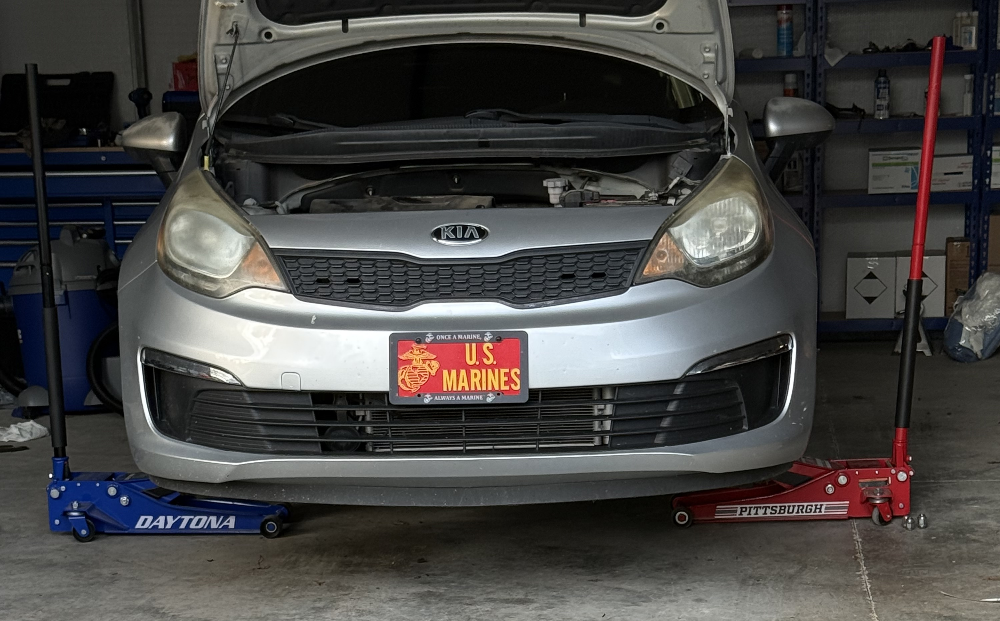

1990s coupe — suspension refresh
Replaced worn shocks and end links, corrected a subtle rear sag, and re-torqued every critical fastener to spec. Road test confirmed quiet ride and neutral turn-in — owner uses the car as a weekend driver, not a trailer queen.